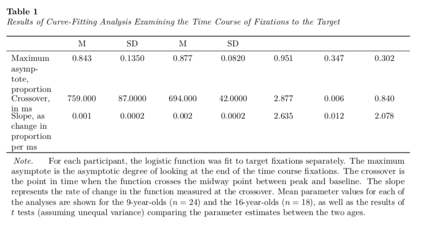
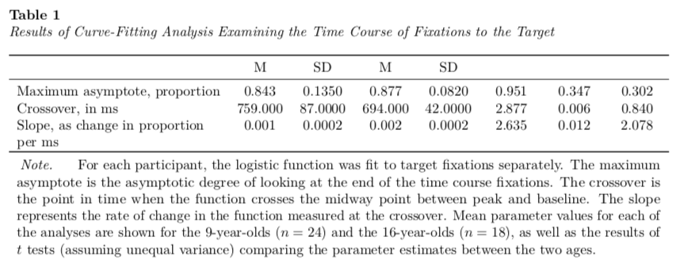
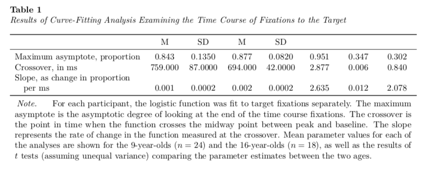
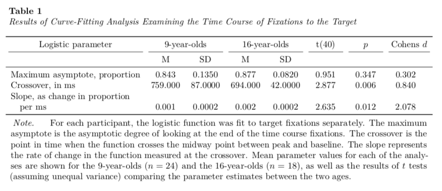
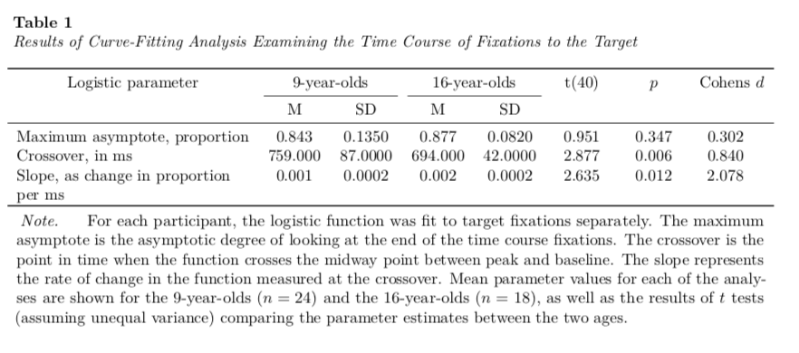

---
title: "Untitled"
author: "Andrew Zieffler"
date: "1/11/2020"
output: pdf_document
header-includes:
- \usepackage{caption}
- \captionsetup[table]{textfont={it}, labelfont={bf}, singlelinecheck=false, labelsep=newline}
---./assets/body-header.qmd
This is the second part of a short blog series I am writing to re-create some of the sample tables found in the 7th edition APA Publication Manual. In this post I will attempt to re-create Table 7.8 (p. 214). To do so, I will incorporate many ideas that I covered in the first of these posts.
My Process
I will again render to PDF and set up the YAML to import the caption package (LaTeX) and set up the APA caption formatting.
In the RMarkdown body, I will load a few packages and also create the data frame that includes the table data.
# Load libraries
library(knitr)
library(kableExtra)
library(tidyverse)
# Create table
tab_02 = data.frame(
parameter = c(
"Maximum asymptote, proportion",
"Crossover, in ms",
"Slope, as change in proportion per ms"
),
m1 = c(.843, 759, .001),
s1 = c(.135, 87, .0002),
m2 = c(.877, 694, .002),
s2 = c(.082, 42, .0002),
t = c(0.951, 2.877, 2.635),
p = c(.347, .006, .012),
d = c(0.302, 0.840, 2.078)
)I will then pipe this into the kable() function to set the column names, column alignment, and table caption. The column headings we will want to use are associated with those in the lowest header row of Table 7.8. We will add the higher header row later.
I also employ similar kableExtra function from those introduced in Part 1 to make the table the full page width and include the footnote. The only addition is the use of escape=FALSE as an additional argument in the footnote() function to use LaTeX syntax (namely the $) to typeset the mathematics in the footnote.
kable(
tab_02,
format = "latex",
booktabs = TRUE,
escape = FALSE,
longtable = TRUE,
col.names = c("", "M", "SD", "M", "SD", "", "", ""),
align = c("l", "c", "c", "c", "c", "c", "c", "c"),
caption = "Results of Curve-Fitting Analysis Examining the Time Course of Fixations to the Target"
) %>%
kable_styling(full_width = TRUE) %>%
footnote(
general_title = "Note.",
general = "For each participant, the logistic function was fit to target fixations separately. The maximum asymptote is the asymptotic degree of looking at the end of the time course fixations. The crossover is the point in time when the function crosses the midway point between peak and baseline. The slope represents the rate of change in the function measured at the crossover. Mean parameter values for each of the analyses are shown for the 9-year-olds ($n=24$) and the 16-year-olds ($n=18$), as well as the results of $t$ tests (assuming unequal variance) comparing the parameter estimates between the two ages.",
threeparttable = TRUE,
footnote_as_chunk = TRUE,
escape = FALSE
)
Again, this gets us about 90% of the way there. The first adjustment we will want to make is to make the first column wider. To do this we will use the column_spec() function from kableExtra to change the column width of the first column. For most of my work, I play around with this width until it looks good.
kable(
tab_02,
format = "latex",
booktabs = TRUE,
escape = FALSE,
longtable = TRUE,
col.names = c("", "M", "SD", "M", "SD", "", "", ""),
align = c("l", "c", "c", "c", "c", "c", "c", "c"),
caption = "Results of Curve-Fitting Analysis Examining the Time Course of Fixations to the Target"
) %>%
kable_styling(full_width = TRUE) %>%
footnote(
general_title = "Note.",
general = "For each participant, the logistic function was fit to target fixations separately. The maximum asymptote is the asymptotic degree of looking at the end of the time course fixations. The crossover is the point in time when the function crosses the midway point between peak and baseline. The slope represents the rate of change in the function measured at the crossover. Mean parameter values for each of the analyses are shown for the 9-year-olds ($n=24$) and the 16-year-olds ($n=18$), as well as the results of $t$ tests (assuming unequal variance) comparing the parameter estimates between the two ages.",
threeparttable = TRUE,
footnote_as_chunk = TRUE,
escape = FALSE
) %>%
column_spec(column = 1, width = "2in")
The second thing we will adjust is that in the original table there is a slight indent in the text “Slope, as change in proportion per ms” to indicate that the text has overflowed onto the next line. To do this we have to include some LaTeX syntax into the actual data.
We want insert a linebreak into the text after the word “proportion” and then indent the text slightly. The LaTeX syntax for a linebreak is two forward slashes \\, and that for indenting is \hspace{1em} where \hspace{} indicates a horizontal space and 1em is the width of this space; in our case I use a width of one em.
If we were using a LaTeX program this syntax would work fine, but in RMarkdown, the forward slash \ is a special escape character. Thus, if we really want a forward slash we need to use two slashes, \\, the first escapes and the second is our actual slash. Thus for our syntax we need four forward slashes (to really get two) for the linebreak and then we need to again use two to make the horizontal space. This looks like this:
\\\\\\hspace{1em}We will add this directly into the data frame exactly where we want the linebreak and indentation.
# Create table with linebreak and indentation
tab_02 = data.frame(
parameter = c(
"Maximum asymptote, proportion",
"Crossover, in ms",
"Slope, as change in proportion \\\\\\hspace{1em}per ms"
),
m1 = c(.843, 759, .001),
s1 = c(.135, 87, .0002),
m2 = c(.877, 694, .002),
s2 = c(.082, 42, .0002),
t = c(0.951, 2.877, 2.635),
p = c(.347, .006, .012),
d = c(0.302, 0.840, 2.078)
)Then we can re-run the syntax to create our table.

The last thing we need to do is add in the top header row. To do this we will employ the add_header_above() function from the kableExtra package. This function takes an argument header= that according to the documentation, gives a “(named) character vector with the column span as values. For example, c(" " = 1, "title" = 2) can be used to create a new header row for a 3-column table with”title” spanning across column 2 and 3.”
We will also include escape=FALSE in this function to again use LaTeX syntax to format the text in this heading. (Note: Placing text inside a set of $ will italicize it as it typesets it mathematically.) The new syntax for us is:
kable(
tab_02,
format = "latex",
booktabs = TRUE,
escape = FALSE,
longtable = TRUE,
col.names = c("", "M", "SD", "M", "SD", "", "", ""),
align = c("l", "c", "c", "c", "c", "c", "c", "c"),
caption = "Results of Curve-Fitting Analysis Examining the Time Course of Fixations to the Target"
) %>%
kable_styling(full_width = TRUE) %>%
footnote(
general_title = "Note.",
general = "For each participant, the logistic function was fit to target fixations separately. The maximum asymptote is the asymptotic degree of looking at the end of the time course fixations. The crossover is the point in time when the function crosses the midway point between peak and baseline. The slope represents the rate of change in the function measured at the crossover. Mean parameter values for each of the analyses are shown for the 9-year-olds ($n=24$) and the 16-year-olds ($n=18$), as well as the results of $t$ tests (assuming unequal variance) comparing the parameter estimates between the two ages.",
threeparttable = TRUE,
footnote_as_chunk = TRUE,
escape = FALSE
) %>%
column_spec(column = 1, width = "2in") %>%
add_header_above(
c("Logistic parameter" = 1, "9-year-olds" = 2, "16-year-olds" = 2,
"t(40)" = 1, "$p$" = 1, "Cohens $d$" = 1),
escape = FALSE
)
By default the add_header_above() function adds a bottom border for each column that includes text. To mimic Table 7.8 we need to remove that border from a few of those columns. I know of no way to do this in the R syntax. So, what we need to do is examine the actual LaTeX syntax that is being produced when we create this table. If you run this syntax in the Console, it will produce the following LaTeX syntax (which is rendered into the formatted table in your RMarkdown document).
\begin{ThreePartTable}
\begin{TableNotes}[para]
\item \textit{Note.}
\item For each participant, the logistic function was fit to target fixations separately. The maximum asymptote is the asymptotic degree of looking at the end of the time course fixations. The crossover is the point in time when the function crosses the midway point between peak and baseline. The slope represents the rate of change in the function measured at the crossover. Mean parameter values for each of the analyses are shown for the 9-year-olds ($n=24$) and the 16-year-olds ($n=18$), as well as the results of $t$ tests (assuming unequal variance) comparing the parameter estimates between the two ages.
\end{TableNotes}
\begin{longtabu} to \linewidth {>{\raggedright\arraybackslash}p{2in}>{\centering}X>{\centering}X>{\centering}X>{\centering}X>{\centering}X>{\centering}X>{\centering}X}
\caption{\label{tab:}Results of Curve-Fitting Analysis Examining the Time Course of Fixations to the Target}\\
\toprule
\multicolumn{1}{c}{Logistic parameter} & \multicolumn{2}{c}{9-year-olds} & \multicolumn{2}{c}{16-year-olds} & \multicolumn{1}{c}{t(40)} & \multicolumn{1}{c}{$p$} & \multicolumn{1}{c}{Cohens $d$} \\
\cmidrule(l{3pt}r{3pt}){1-1} \cmidrule(l{3pt}r{3pt}){2-3} \cmidrule(l{3pt}r{3pt}){4-5} \cmidrule(l{3pt}r{3pt}){6-6} \cmidrule(l{3pt}r{3pt}){7-7} \cmidrule(l{3pt}r{3pt}){8-8}
& M & SD & M & SD & & & \\
\midrule
Maximum asymptote, proportion & 0.843 & 0.1350 & 0.877 & 0.0820 & 0.951 & 0.347 & 0.302\\
Crossover, in ms & 759.000 & 87.0000 & 694.000 & 42.0000 & 2.877 & 0.006 & 0.840\\
Slope, as change in proportion \hspace{1em}per ms & 0.001 & 0.0002 & 0.002 & 0.0002 & 2.635 & 0.012 & 2.078\\
\bottomrule
\insertTableNotes
\end{longtabu}
\end{ThreePartTable}We can copy-and-paste this syntax outside of a code chunk and it will also be rendered into a table. The RMarkdown document will read and render any LaTeX syntax so long as you are outputting to a PDF.
The \cmidrule{} syntax is what is used to include the bottom borders (called “mid-rules” in the typesetter’s world). We can delete all of them except for \cmidrule(l{3pt}r{3pt}){2-3} and \cmidrule(l{3pt}r{3pt}){4-5}. These are drawing the mid-rules under the second/third and fourth/fifth columns, respectively.
\begin{ThreePartTable}
\begin{TableNotes}[para]
\item \textit{Note.}
\item For each participant, the logistic function was fit to target fixations separately. The maximum asymptote is the asymptotic degree of looking at the end of the time course fixations. The crossover is the point in time when the function crosses the midway point between peak and baseline. The slope represents the rate of change in the function measured at the crossover. Mean parameter values for each of the analyses are shown for the 9-year-olds ($n=24$) and the 16-year-olds ($n=18$), as well as the results of $t$ tests (assuming unequal variance) comparing the parameter estimates between the two ages.
\end{TableNotes}
\begin{longtabu} to \linewidth {>{\raggedright\arraybackslash}p{2in}>{\centering}X>{\centering}X>{\centering}X>{\centering}X>{\centering}X>{\centering}X>{\centering}X}
\caption{\label{tab:}Results of Curve-Fitting Analysis Examining the Time Course of Fixations to the Target}\\
\toprule
\multicolumn{1}{c}{Logistic parameter} & \multicolumn{2}{c}{9-year-olds} & \multicolumn{2}{c}{16-year-olds} & \multicolumn{1}{c}{t(40)} & \multicolumn{1}{c}{$p$} & \multicolumn{1}{c}{Cohens $d$} \\
\cmidrule(l{3pt}r{3pt}){2-3} \cmidrule(l{3pt}r{3pt}){4-5}
& M & SD & M & SD & & & \\
\midrule
Maximum asymptote, proportion & 0.843 & 0.1350 & 0.877 & 0.0820 & 0.951 & 0.347 & 0.302\\
Crossover, in ms & 759.000 & 87.0000 & 694.000 & 42.0000 & 2.877 & 0.006 & 0.840\\
Slope, as change in proportion \hspace{1em}per ms & 0.001 & 0.0002 & 0.002 & 0.0002 & 2.635 & 0.012 & 2.078\\
\bottomrule
\insertTableNotes
\end{longtabu}
\end{ThreePartTable}This gives us our final table.
